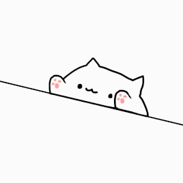

The Summer Shenanigans
As the season changes and school becoming a routine, we're still going onto our second year of the pandemic. I tried to make my summer memorable with adventure and pals. Yet, there was definatly a ton of bumps during this summer that I had to figure out. Seeing people was back and forth depending on the vaccine and the limit of people who gather in a backyard. Though it was difficult, we worked out some fun things to do, either online or in person.
One fun thing that we did was online games. We jumped onto Discord and played Among Us, Jackbox Games, Animal Crossing, etc. We also started doing movie nights every Sunday and spin a wheel to see who'll pick a movie.
Here are some free games we played:
Bucket Summer List
I did create a list of things that I wanted to do this summer. I know some were impossible to go since of travel restrictions, but I found other things to do in Ottawa. The list helped me keep track and save money to plan what I wanted to do. I crossed off most things, but next year, I hope to get to do the things I couldn't.
| Places to Go | Did I go? |
|---|---|
| SUP at Shirleys Bay | Yes! |
| Seoul Dog | Yes and I want to go again! |
| Railbender Studio | No, still waiting to get another tattoo |
| Montreal | Yes :) |
| Beyond Van Gogh Ottawa | Definitely! |
| Banff | Sadly, no |
Follow my Summer Journey
I believe my summer was pretty good this year! If you want to take a peek at what I did, you can visit my biography. Even if COVID-19 rules were tight, I was able to find something to do. One surprising highlight that I enjoyed was Blues Clues’ anniversary! Steve’s message was too wholesome.
Here's Steve's message:
So about that time Steve went off to college… #BluesClues25 pic.twitter.com/O8NOM2eRjy
— Nick Jr. (@nickjr) September 7, 2021
Thank you, Steve from Blues Clues. <3